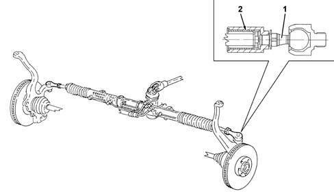

4110B STEERING CONTROL LINKAGE
- Path
- Descriptions > 41 STEERING UNIT > 4110 STEERING CONTROL AND LINKAGE > 4110B STEERING CONTROL LINKAGE
- Kind
- system description
- Applies to
- all engines; all production periods
- Interactive page
- https://sloeber94.github.io/elrnDB-aGt/en/#/125000366
Applies to: all engines; all production periods
SPECIFCATIONS
VIEW OF STEERING TIE-ROD LINKAGES

1 - Steering tie-rods
2 - Flexible element
The steering tie-rods are equipped with a flexible element which dampens the vibrations due to the kinematic effect of the suspension and eliminates vibrations, transmitted to the steering wheel, in the different steering conditions.